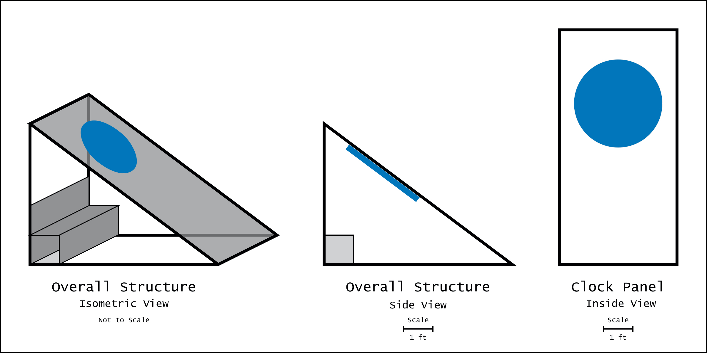
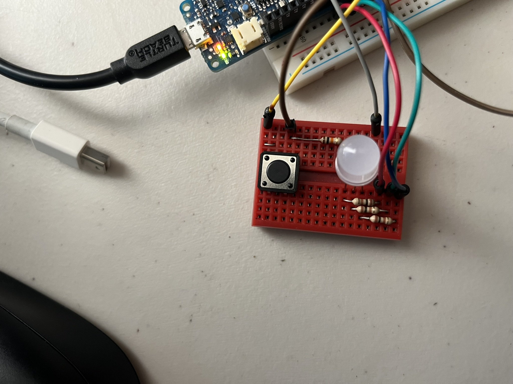

It’s been a productive weekend for ColorClock design. My collaborator / partner and I have decided on a form that we are happy with and are now looking into materials - and consequently design modifications to accommodate for standard sizing and availability of said materials.
Fabrication
Up until this point, the physical design of ColorClock has been undefined; I’ve focused on the software and less on the construction of the end product. I’ve been drawn to the idea of a circular light which is in line with the cyclical nature of time, and the form factor of a wall clock. We considered that this piece needs to be visible during the daytime in a sunny desert, so the light needs to be shaded in some way. After countless discussions, we were thrilled to settle on this simple lean-to type shade structure with the light visible from underneath. We also decided to include a bench under the structure so that viewers would be able to experience a reprieve from the sun while enjoying the view of the ColorClock.

Hardware
The current design of ColorClock calls for non-addressable RGB LEDs, since the light only needs to display one color at any given time. We are considering either constructing our own light fixture with RGB LED strips, individual LEDs, or using a pre-fabricated circular PCB with a LED matrix. As of yesterday morning, we were leaning more towards using a pre-fabricated board to reduce the complexity of assembly and it will probably just be prettier than something we make ourselves. But when considering the size of the light that we would like (~3 foot radius), buying something pre-fab might not be feasible. There’s also the question of whether we want to use RGB LED strips, or to use individual LEDs, and embark on the challenge of soldering ~200 LEDs by hand 😅
Software
The bulk of the software design and architecture is complete; the time-to-color algorithm is working, and the gradual change from one color to the next is also functioning properly. I paused development in 2021 when my test circuit was not smoothly transitioning from one color to the next but we figured out that I was simply using the wrong output pins of the Arduino. The next software task is to take user input in the form of switches to allow the time to be set externally.
The current software design uses the assumption that the LEDs are non-addressable. The time-to-color algorithm outputs three values, red, green, and blue. But if I end up using addressable LEDs, I will have to add another layer of architecture to take the RGB values and send them to the board. I’ll cross that bridge when/if I get there.
Though it’s possible my LED programming design will have to be modified, for now I’m directing my attention to debounce logic for pushbutton input 🤓
